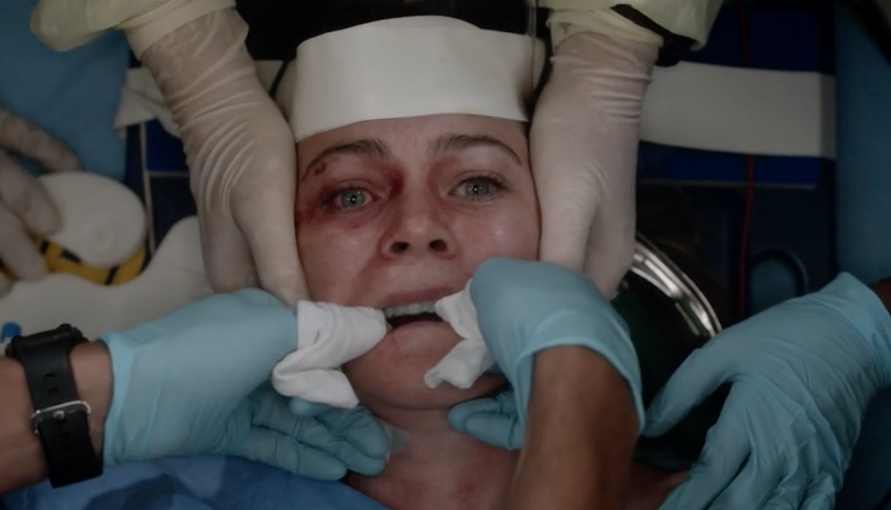

Sobre la serie
El drama médico explora el día a día de un grupo de cirujanos que enfrentan casos clínicos complejos mientras intentan mantener sus relaciones personales a flote. Con el tiempo, la serie ha evolucionado y presentado nuevas generaciones de médicos, sin perder su esencia emocional y humana.

¿Por qué verla?
- Muestra con gran realismo las emociones y dilemas de los médicos dentro y fuera del hospital..
- Cada capítulo mezcla drama, humor y reflexión, logrando conectar con el espectador.
- Sus personajes evolucionan constantemente, enfrentando historias profundas y humanas.
- Es una serie que te hace reír, llorar y pensar sobre la vida y las relaciones.
Mira el tráiler oficial
Datos curiosos
- El nombre “Grey’s Anatomy” es un homenaje al libro médico Gray’s Anatomy (1858).
- Es una de las series más largas de la historia con más de 20 temporadas.
- La actriz Ellen Pompeo ha interpretado a Meredith Grey por casi dos décadas.